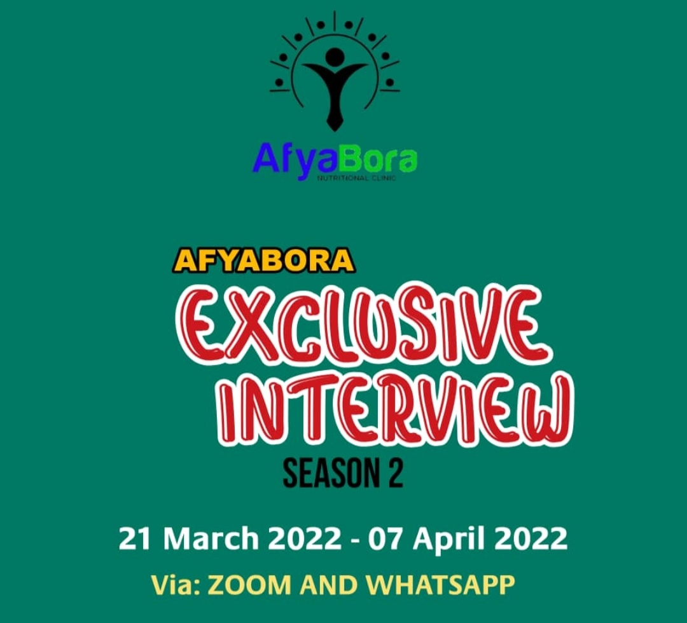

Karibu Afyabora Nutrition organization
Hello everyone!
Katika kuhakikisha kuwa tunasonga mbele, tumeamuwa kutengeneza Afyabora Database ambayo kila mwanachama anatakiwa kujisajili.
Database hii itatumika kutunza taarifa ya kila mwanachama wa taasisi hii.
Kigezo Cha kuwa mwanachama;
1. Uwe unataaluma ya Nutrition, food science au family consumer either mwanafunzi au umemalza.
2. Uwe tayar kushiriki katika kazi mbalimbali za taasisi.
3. Uwe tayar kulipa Ada ya uwanachama.
Fomu hii ijazwe na Yule tuu ambaye kwa ridhaa yake amekubali kuwa mwanachama wa Afyabora Nutrition Organization.
Join us now!
✍️ Imetolewa na:
Martin Yohana - IT Coordinator,
AfyaBora Nutrition organization.
04/06/2022
Je, unafahamu ?
Kulala kwa kuegemea upande wa kushoto ndiko sahihi na kunashauriwa kiafya. Hii ni kwasababu unapolala kwa kuegemea upande wa kushoto tumbo la chakula huwa chini ya usawa wa koo la chakula na mrija wa oesophagus hivyo chakula hakitoweza kurudi nyuma na kuzuia kiungulia. Pia husaidia uti wa mgongo kukaa vizuri na kuepukana na matatizo kama ya maumivu ya mgongo na viungo.
Tunakusisitiza kuzingatia ushauri huu na epuka kula vyakula vyenye wanga kwa wingi usiku kabla ya kulala.
Afyabora exclusive interview
Get ready for awesome interviews from different people of different levels, all sitting together ddiscusssing topics za kutosha.
Join now na Afyabora tufurahi pamoja huku tukipata information, connection na michongo kibao
Afyabora Exclusive Interview Season 2 ni ya Moto 🔥🔥🔥
Afyabora Nutritional Calendar
| March 2022 | |
|---|---|
| Event | Date |
| International Women`s Day | March 8, 2022 |
| World kidney day | March 10, 2022 |
| Brain Awareness Week | March 14-20, 2022 |
| Nutrition & Hydration Week | March 14-20, 2022 |
| World Sleep Day | March 18, 2022 |
| World Down Syndrome | March 21,2022 |
| World Water Day | March 22, 2022 |
| World Tuberculosis Day | March 24, 2022 |
| April 2022 | |
|---|---|
| Event | Date |
| World Autism Awareness Day | April 2, 2022 |
| World Health Day | April 7, 2022 |
| World Immunization Week | april 24-30, 2022 |
| May 2022 | |
|---|---|
| Event | Date |
| Worker's Day | May 1, 2022 |
| World Asthma Day | May 3, 2022 |
| World Hand Hygiene day | May 5, 2022 |
| World Ovarian Cancer Day | May 8, 2022 |
| International Nurse Day | May 12, 2022 |
| World Health Digestive Day | May 29, 2022 |
| June 2022 | |
|---|---|
| Event | Date |
| World Environment Day | June 5, 2022 |
| Men's Health Awareness Week | June 13-19, 2022 |
| World Blood Donor Day | June 14, 2022 |
| World Kidney Cancer Day | June 16, 2022 |
| July 2022 | |
|---|---|
| Event | Date |
| World Head & Neck Day | July 27, 2022 |
| World Hepatic Day | July 28, 2022 |
| International Day of Friendship | July 30, 2022 |
| August 2022 | |
|---|---|
| Event | Date |
| World Breastfeeding Week | August 1-7, 2022 |
| Polio Awareness Week | August 7-13, 2022 |
| International Youth Day | August 12, 2022 |
| September 2022 | |
|---|---|
| Event | Date |
| National Kidney Awareness Week | September 5-8, 2022 |
| World Heart Day | September 29, 2022 |
| October 2022 | |
|---|---|
| Event | Date |
| International Day Old Person | October 1, 2022 |
| World Mental Health Day | October 10, 2022 |
| World Food Day | October 16, 2022 |
| World Trauma Day | October 17, 2022 |
| National Down Syndrome Day | October 20, 2022 |
| World Osteoporosis Day | October 20, 2022 |
| World Polio Day | October 24, 2022 |
| World Stroke Day | October 29, 2022 |
| November 2022 | |
|---|---|
| Event | Date |
| World Children's Day | November 5, 2022 |
| World Diabetes Day | November 14, 2022 |
| World Prematurity Day | November 17, 2022 |
| December 2022 | |
|---|---|
| Event | Date |
| World AIDs Day | December 1, 2022 |
| International Day of Persons with Disability | December 3, 2022 |